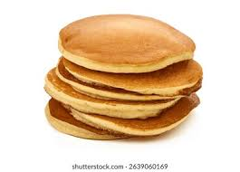

Home Page
Pancakes

Description
A fluffy delicious traditional milk, egg, flour based pancake. This is a delicious brown crispy pancake recipe. It is very simple only including a couple ingredients that are very easily accesible.
The pancake recipe is also very easy to follow, easy to remember, and very easy to quickly execute in a short amount of time.
Ingredients
- Eggs
- Flour
- Milk
- Vanilla extract
- Sugar
- Baking powder
- Butter
- Salt
Instructions
- Mix 1 ½ cups all-purpose flour with 3 ½ teaspoons baking powder.
- Mix 1 tablespoon white sugar with ¼ teaspoon salt, or more to taste.
- Mix 1 ¼ cups milk with 3 tablespoons butter, melted with 1 large egg.
- Mix all your ingredients into one bowl.
- Heat up pan up to medium heat.
- Add either oil or butter to create non-stick effect.
- Use 1/4 cup to scoop batter and pour batter into pan, each scoop being a pancake.